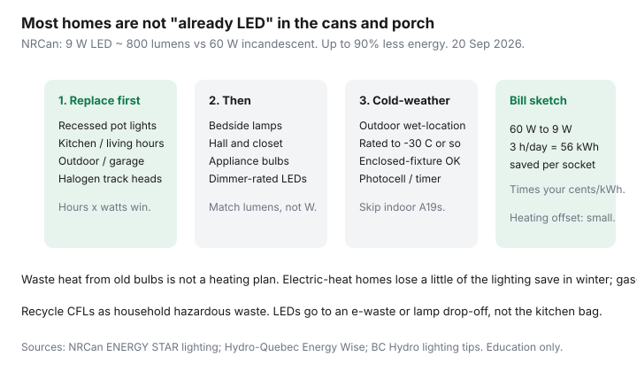

Utilities · Canada
LED Lighting Upgrades for Canadian Homes: Bill Impact and What to Replace First
People say they “already switched to LED” because the table lamp is a warm A19 from a big-box four-pack. The recessed cans in the kitchen are still 50 W halogens cooking the attic. The porch flood is a 90 W PAR that starts slow at −20°C. That is the Canadian lighting project: triage the hours, not a smart-home catalogue.
Lighting will not fix January. It is still a cheap, afternoon-sized win after air sealing. Rank it that way in upgrade order.
Disclosure: LED kits are an offer type. Saving Optimizer may earn a commission if we later add partner links. We do not currently claim retailer or utility lighting-program partnerships. This is education — not a product endorsement.
Key takeaways
- NRCan: ENERGY STAR LEDs use up to 90% less energy than incandescent and last far longer. A 9 W LED ~ 800 lumens replaces a 60 W incandescent.
- Most homes that “already switched” still have halogen pot lights, porch floods, and appliance bulbs. Those hours × watts are the project.
- Shop lumens and colour temperature (2700–3000 K for living rooms), and buy dimmer-compatible lamps for dimmer circuits. A flicker is a return, not a character.
- Outdoor and enclosed fixtures need a lamp rated for the wet location and the cold. An indoor A19 on the porch is how you buy the same bulb twice.
- Waste heat from old bulbs is not a heating plan. Electric-heat homes keep a little less of the lighting save in winter; it is still worth doing.
Which fixtures still hide inefficient bulbs
Walk the house at night with a notepad. Write fixture, estimated watts (look at the stamp), and hours per day. The hits are predictable:
- Recessed pot lights — GU10 or BR30 halogens, often 35–50 W each, six to twelve in a kitchen. These are the first box you buy.
- Outdoor and garage — floods, coach lamps, and the bulb over the side door that burns from November to March because the photocell died.
- Track and pendants — leftover MR16 halogens on a dimmer from 2008.
- Appliance and “special” — range hood, fridge, sewing machine. Small watts, but a 40 W fridge bulb is a tiny resistive heater in a cold box.
- The hall closet can wait. So can the decorative chandelier you use four evenings a year if the sockets are a fight.

Lumens, colour temperature, and dimmer compatibility
| What you want | Look for | Skip |
|---|---|---|
| Brightness | Lumens (800 lm ≈ old 60 W; 1100 lm ≈ old 75 W) | Buying by watts alone |
| Colour | 2700–3000 K living rooms; 3000–4000 K kitchens/work | 5000 K “daylight” in a bedroom unless you like a clinic |
| Dimmers | “Dimmer compatible” plus a trailing-edge dimmer if the old one buzzes | Cheap LEDs on a 1990s incandescent dimmer |
| Quality | ENERGY STAR mark; CRI 80+ (90 if you care about food and faces) | No-name bulk packs that shift purple in six months |
Smart bulbs draw standby — often under 0.5 W if they aim at ENERGY STAR, more if they do not. They belong on lamps you actually scene. They are a poor choice for a closet. See phantom loads before you put Wi-Fi in every socket.
Outdoor and pot-light gotchas in cold weather
Canadian outdoor fixtures are wet, enclosed, and cold. The carton has to say so.
- Wet-location or outdoor rating on the lamp, not just the fixture.
- Enclosed-fixture rated if the glass globe traps heat. An indoor LED in a sealed coach lamp fails early.
- A minimum operating temperature on the label (many quality LEDs list −20°C or −30°C). CFLs hated the cold; LEDs are better, not magical if you bought the indoor SKU.
- Pot lights into an unconditioned attic should be IC-rated fixtures with a proper air seal. Swapping the lamp does not fix a can that leaks heated air. That is the air-sealing job.
- Photocells and timers beat “we leave the porch on.” A dead photocell is a 12-hour load all winter.
Estimating kWh savings vs heating interaction (small but real)
Worksheet for one socket: (old W − new W) × hours/day × 365 ÷ 1000 = kWh/year. A 60 W to 9 W swap at 3 hours/day is about 56 kWh/year. At Ontario TOU off-peak 9.8 ¢ that is about $5.50 of energy; at Rate D’s second tier 11.142 ¢ about $6.20; at BC Hydro Step 2 14.08 ¢ about $8. Twelve kitchen cans at 50 W halogen to 8 W LED for 5 hours/day is the project that shows up on a bill — hundreds of kWh, not $4.
Old bulbs dumped most of their watts as heat. In an electrically heated room, some of that heat was useful in January and a nuisance in July. Switching to LED means the thermostat (or the baseboard) makes up a fraction of the winter lighting save. It does not mean LEDs “cost more in Canada.” You were heating with a $20 lamp. Keep the lighting save; heat with the plant you already have. Gas-heat houses keep almost all of the hydro save because the furnace, not the bulb, does January.
Bulk replacement strategy room by room
- Kitchen and living-room cans and tracks — highest hours.
- Porch, garage, and the lamp on dusk-to-dawn.
- Home office if you work after 4 p.m. all winter.
- Bedrooms and halls.
- Closets and specialty sockets last.
Buy one brand/temperature per room so the kitchen does not look like a sample card. Keep two spares. If a utility or municipality still runs a lamp exchange, use it the week it is open — those programs appear and vanish.
Recycling old lamps properly
Incandescent and halogen can go in the garbage in many cities; check the municipal page. CFLs contain mercury — household hazardous waste or a retailer take-back, not the kitchen bag. LEDs are e-waste: depot, some hardware take-back, or a municipal lamp program. Do not put a bag of CFLs beside the blue box and hope. Tenants: a shoe box in the hall closet until the next depot Saturday is a plan; a dumpster is not.
Sources & date stamps
- NRCan, ENERGY STAR / Everything LED — up to 90% less energy than incandescent; 9 W LED ≈ 800 lumens vs 60 W (used 20 Sep 2026).
- Hydro-Québec Energy Wise and BC Hydro lighting tips — hours and fixture choice, not a national ¢.
- OEB RPP and Hydro-Québec Rate D 1 Apr 2026 figures used for the dollar sketch (same stamps as other hub guides).
Frequently asked questions
I already bought LEDs. Why would this still matter?
Because the cans, porch, and garage are usually last. Hours times watts in those fixtures beat a living-room lamp you changed in 2019.
What lumens replace a 60 W incandescent?
About 800 lumens. NRCan’s example is a 9 W ENERGY STAR LED. Shop lumens, then watts.
Do LEDs work at −30°C on the porch?
Quality outdoor-rated LEDs usually do; indoor A19s and most CFLs do not. Read the minimum temperature and wet-location rating.
Do I lose heating if I switch to LED?
A little, in electric-heat rooms, because waste heat drops. It is a small offset, not a reason to keep halogen cans. Gas-heat homes keep nearly all of the hydro save.
Where do old CFLs go?
A household hazardous-waste or lamp depot. They contain mercury. LEDs go to e-waste or a lamp take-back, not the compost.